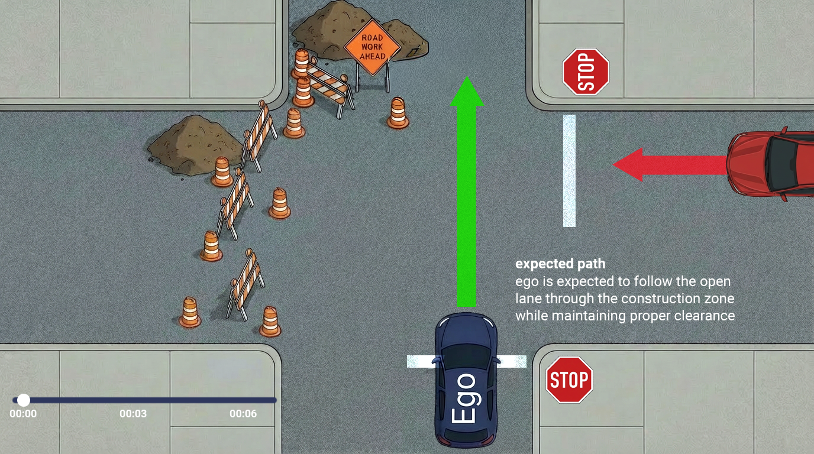
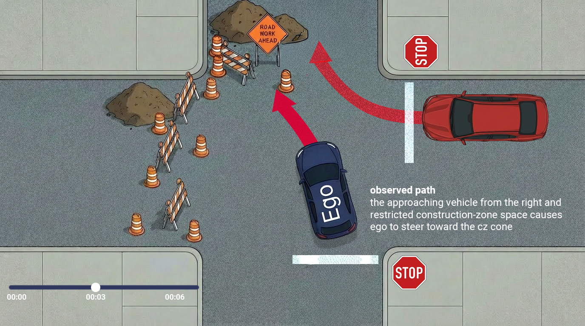
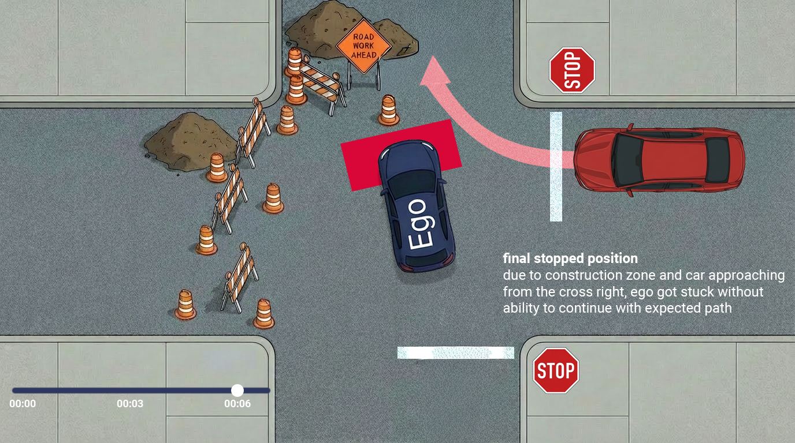
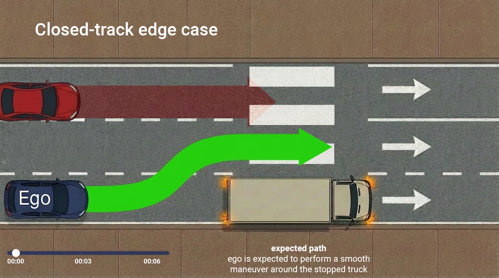
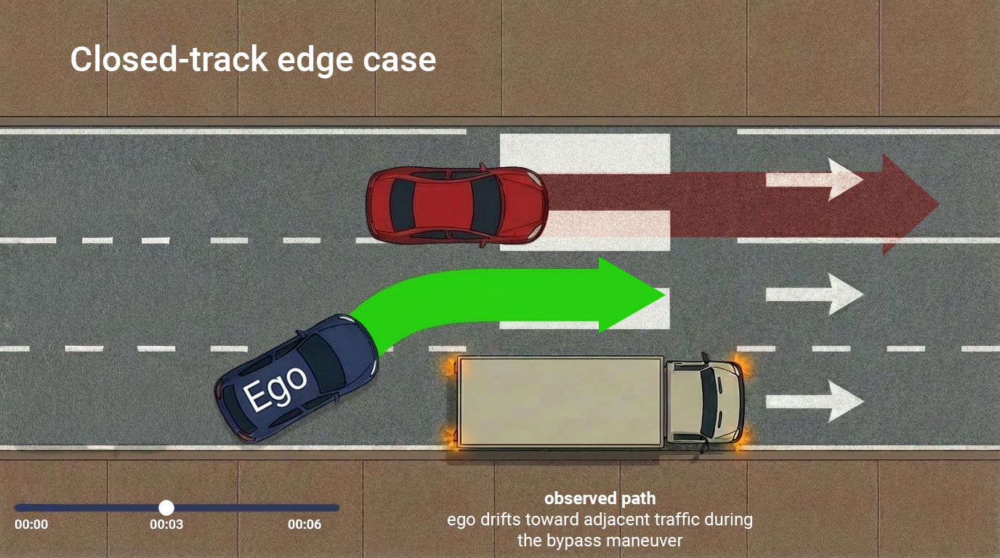
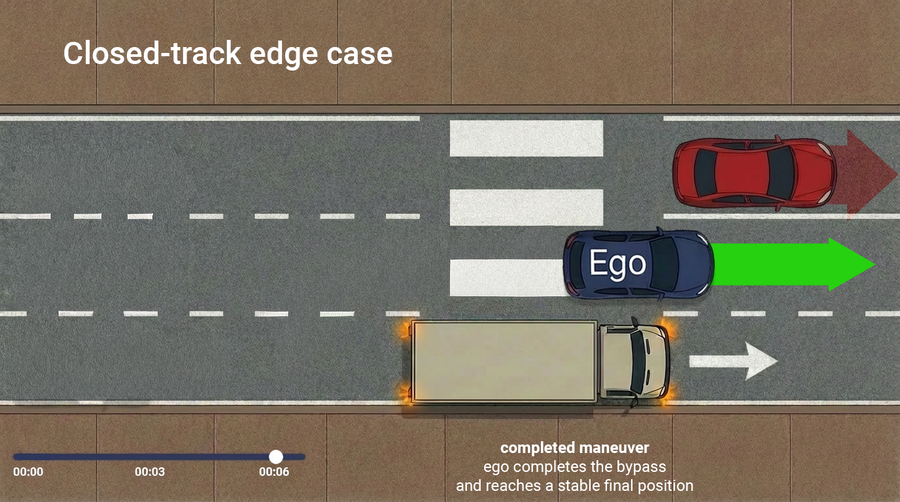

I analyze how the vehicle responded to its environment, what inputs influenced its decisions,
and whether the outcome aligns with expected behavior. When something feels off—hesitation,
unexpected maneuvers, unclear intent—I break down the scene and surface the key signals so the
right teams can take action quickly.
What I usually do:
Compare expected behavior with what the vehicle actually did, frame by frame
Highlight the moments where perception, prediction, or planning influenced the outcome
Escalate triage notes and critical events to the appropriate teams
Simulation Reproduction
Logs → Scenarios
To get a full picture of the vehicle’s behavior and intent—without affecting comfort or safety
in the real world—I recreate key situations in simulation. This allows engineers to experiment,
test hypotheses, and compare software performance across versions.
Typical work:
Run edge-case scenarios to observe how the system responds under different conditions
Build scenario variants to isolate and test specific perception, prediction, or planning behaviors
Share findings and escalate unusual or unexpected results to leads and engineering teams
Testing & Scenario Validation
Scenarios → Coverage
From system-validation runs to edge-case testing on closed tracks and real-world streets,
I focus on completing tests thoroughly and safely. I look for improvements or regressions
in behavior and provide clear, actionable notes to the engineering team.
Typical work:
Execute structured tests focused on known risks and unusual behaviors
Trace how software changes affect on-road performance or comfort
Coordinate with engineers and operators to refine what needs deeper investigation next
Experience
Autonomous vehicle testing & triage background
I’ve worked across AV testing, field operations, and software quality—mapped out timelines of challenging instances, supporting simulation teams, and helping connect real-world behavior to engineering decisions in multiple cities.
I operate at the intersection of real-world dynamic environments and engineering logic. Over the past few years, I’ve embedded myself in autonomous vehicle programs, acting as the translator between what happens on the road and what needs to happen in the codebase.
My specialty isn't just watching the vehicle's trajectory, it's actually understanding the why behind the wheel. I break down complex timeline data—analyzing perception tracks, prediction outputs, and planner logic—to pinpoint exactly where the software succeeded or struggled.
By translating unpredictable on-road interactions into clean, structured simulation scenarios, I help engineering teams validate hypotheses and test fixes without the risks of public road testing. Ultimately, I build the feedback loops and documentation that turn raw data into a safer, smoother ride.
Portfolio
Selected case studies
These examples are abstracted and they only illustrate
how I approach event triage, simulation, testing, and process improvements.
Investigating the trigger behind a hard brake when traffic conditions appeared clear
Triage Analysis
Role: Triage & Event Analysis
Event Summary:
The ego performed a sudden, hard brake even though no obvious obstacle was present in the environment. After the slowdown, it continued along its planned path.
My Approach:
Stepped through the event timeline to check when the braking command was triggered and what the ego “believed” was ahead
Checked nearby actors’ predicted trajectories to rule out approaching cross-traffic or merging vehicles
Looked for any momentary false positives or flickering detections in the forward field-of-view
I also looked at how the braking felt from a comfort and safety perspective, since harsh deceleration can indicate the planner reacted too aggressively
Outcome:
A short-lived false positive obstacle (lasting ~2 seconds) was detected ahead of the ego.
The planner reacted conservatively, triggering a harsh brake before the track disappeared.
Clarifying the reason ego did not proceed on its path
Triage Analysis
Role: Triage & Event Analysis
Event summary:
The ego stopped at a traffic-light intersection during nighttime and didn’t proceed even though the light was green
My Approach:
First step in these situations is to check the surroundings, location context, and any possible false positives that might influence behavior
Traced the comfort/safety signals and camera feeds to see what ego “thought” was happening
After stepping through the logs, I noticed an emergency vehicle crossing from the left with roof lights on, but no siren, and was waiting at its own red signal
Reviewing perception outputs, the yellow top lights were interpreted as active emergency lighting. Because it was nighttime, the reflections and intensity made the vehicle appear as if it was actively responding. Ego held position instead of continuing through the green signal
Outcome:
I documented the finding and recommended improvement: differentiating between true active emergency patterns and steady or low-intensity flashing lights, especially in low-light scenes where reflections can distort the signal
Ensuring clear system behavior in construction-zones and dynamic pedestrian environments
Testing & Scenario Validation
Role: Test Planning & Execution
Challenge:
Ensure consistent and reliable behavior across construction-zone conditions and pedestrian flows in a dynamic environment.
My Approach:
Performed repeated test runs across varied urban zones, including closed-track simulations of construction-zone scenarios
Checked that test plans meet all current requirements, and update the plan when the environment or safety protocols change
Identified key factors that influenced potential misbehavior
Coordinated with operators to get structured feedback after each pass
Outcome:
After testing, I go through the logs and simulation replays, triage every misbehavior, and summarize which triggers influenced ego’s path inside construction zones. I prioritize safety-critical cases, especially ones that could affect future behavior, and I label perception issues related to construction vehicles
Standardizing the triage process to improve future analysis
Process Improvements
Role: Process Design & Documentation
Challenge:
Identify the correct cause of autonomous vehicle misbehavior and ensure consistent, actionable triage reports
My Approach:
Looked at existing triage examples to understand which details and signals engineers relied on most
Drafted a structured template with clear categories to evaluate depending on the observed behavior
Created a standardized format including context, key signals, and recommended next steps
Documented guidelines and examples in internal knowledge spaces to support cross-team alignment
Outcome:
Drastically reduced back-and-forth clarification loops. The team finally had a consistent reporting standard, which meant clearer notes and faster fixes.
Visuals
Autonomous-Driving Scenario Diagrams
These examples are abstracted and they only illustrate how I approach event triage, simulation, testing, and process improvements






Skills
Technical and interpersonal strengths
Technical skills
Tools and methods I rely on to understand, reproduce, and validate behavior